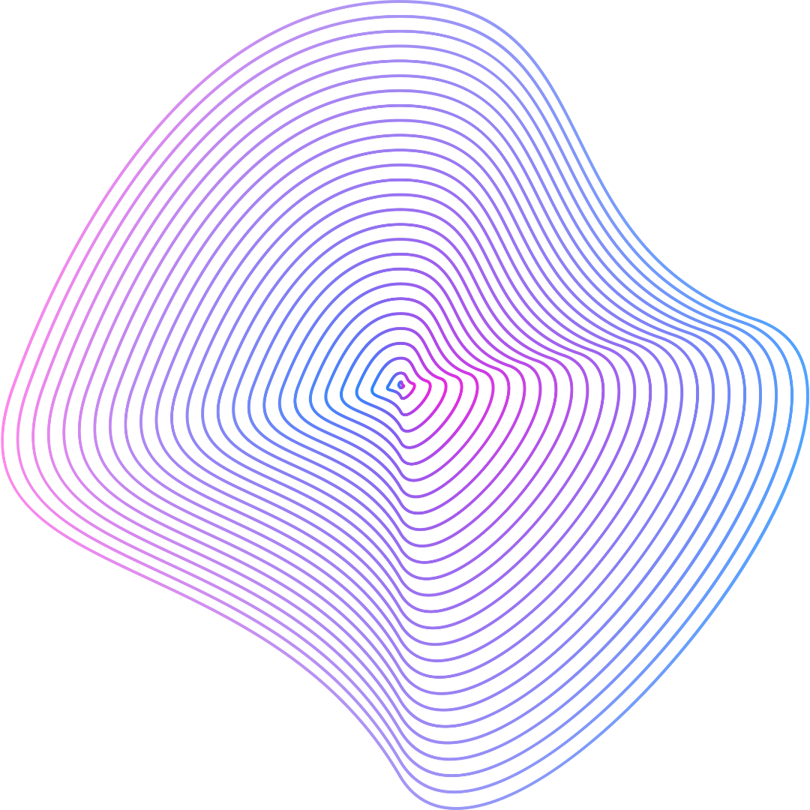

Recarregue suas energias em 30 minutos!
Ative essa pequena área do seu cérebro e veja as suas energias sendo totalmente recarregadas em pouco tempo.
Recarregue agora
Neuroacustic Vibes - Energy
Com um efeito poderoso, ainda que praticamente desconhecido pela maioria das pessoas, essa pequena área do nosso cérebro, quando ativada corretamente, tem o poder de recarregar completamente as nossas energias, independentemente do nível de estresse e cansaço que tenha sido o nosso dia. E o melhor, tudo isso de uma forma totalmente natural e sem a menor necessidade de ingestão de qualquer tipo de substância.


Apenas 30 minutos e seu corpo será totalmente recarregado!
E o melhor, tudo isso sem efeitos colaterais e sem gerar qualquer tipo de dependência.
Recarregue agora
 Uma sobrecarga que atinge a todos invariavelmente
No seu dia a dia
No turbilhão frenético dos dias atuais, é difícil encontrar alguém que não se sinta sobrecarregado, tanto física quanto emocionalmente. A pressão incessante de cumprir demandas profissionais, manter relações sociais, cuidar da saúde e ainda encontrar tempo para o autocuidado tem se tornado um fardo quase que insuportável para muitos.
O Problema do Excesso de Telas
E nesse cenário, diversos fatores têm contribuído para esse estado de exaustão generalizada, sendo um dos principais vilões, sem sombra de dúvidas, o uso excessivo de telas.
A tecnologia, que prometia simplificar nossas vidas e nos conectar de maneira mais fácil, paradoxalmente nos deixou presos em um ciclo interminável de estímulos digitais.
As telas de smartphones, tablets, computadores e televisões se tornaram uma extensão de nós mesmos, consumindo nossa atenção de uma forma nunca imaginada.
Essa constante exposição a dispositivos eletrônicos não apenas nos mantém em um estado de alerta constante, como ainda interfere em nossos padrões de sono, saúde mental e qualidade de vida em geral.
A necessidade de estar sempre conectado.
A era digital trouxe consigo uma pressão para estar sempre disponível, sempre conectado. As notificações incessantes de aplicativos, e-mails e mensagens instantâneas nos mantêm em um estado de ansiedade latente, como se estivéssemos sempre atrás de algo que nunca podemos alcançar.
A necessidade de estar online o tempo todo para acompanhar notícias, atualizações das redes sociais e responder a demandas profissionais nos afasta cada vez mais do momento presente, nos privando da oportunidade de simplesmente estar conosco mesmos

Excesso de conexão e seus efeitos
Sem contar os impactos físicos que tudo isso tem causado. Hoje, por exemplo, já é cientificamente comprovado que o tempo prolongado em frente a dispositivos eletrônicos está claramente associado a problemas de postura, dores musculares, fadiga ocular e distúrbios do sono. Toda essa exposição constante à luz azul emitida por telas a que estamos acostumados, são verdadeiros venenos no que diz respeito ao ciclo circadiano, o que dificulta absurdamente o nosso processo de adormecer e contribui significativamente para a insônia.
Recorrendo a soluções erradas
E o pior de tudo isso é que em meio a toda essa constante sobrecarga física e emocional da vida moderna,
muitas pessoas têm recorrido a formas inadequadas de tentar recarregar suas energias,
buscando alívio temporário para o cansaço e o estresse acumulados.
Formas essas que são estratégias nem sempre saudáveis ou eficazes,
e podem inclusive agravar ainda mais todo esse problema a longo prazo.
Uma das armadilhas mais comuns, por exemplo, é o uso de substâncias como álcool,
cafeína e drogas ilícitas para escapar temporariamente da pressão e da exaustão.
E embora essas substâncias possam proporcionar uma sensação momentânea de relaxamento ou euforia,
em pouco tempo elas podem prejudicar seriamente a nossa saúde física e mental, contribuindo para dependência,
problemas de saúde e desequilíbrios emocionais.

“Maratonar” sua série favorita não vai resolver esse Problema
Outra estratégia equivocada é o uso excessivo de entretenimento digital, como maratonas de séries, videogames ou redes sociais, que além prolongar a nossa exposição às telas, ainda impedem a verdadeira desconexão e recuperação. Além disso, elas podem contribuir para a procrastinação e o isolamento social, agravando ainda mais o cansaço e a sobrecarga emocional.
Reconhecendo o problema
_________________
Enfim, fato é que não dá para negar. Hoje praticamente 100% da população mundial sofre em algum nível com a sobrecarga física e emocional a que estamos submetidos diariamente. Por conta disso, encontrar meios que possamos nos ajudar a como lidar com tudo isso, meios que, de alguma forma, possam recarregar as nossas energias, é fundamental para que possamos dar conta de tudo que não só queremos, como precisamos fazer.
Resolvendo o problema de um jeito que você nunca imaginou
A parte boa é que, em se tratando de desgaste físico e emocional, já existe uma solução. E nesse caso, a solução. Isso porque, além de entregar de fato aquilo que promete, ela ainda faz isso de forma totalmente natural e totalmente livre de qualquer efeito colateral. Conhecidos como áudios binaurais, esses sons revolucionários são verdadeiros carregadores humanos. E em um mundo onde o estresse e a fadiga física e emocional são cada vez mais constantes, eles têm sido uma verdadeira alternativa a quem não apenas precisa recarregar suas energias, como precisa fazer isso de uma forma totalmente segura e natural.
Sinta todo o poder das ondas Delta, Teta e Alfa
Com ondas Delta, Teta e Alfa como sendo as protagonistas desse processo de recuperação,
bastam 30 minutos por dia para já se sentir totalmente renovado, como se tivesse acabado de acordar
de uma bela e completa noite de sono.
Ao induzirem batimentos binaurais e ativar diferentes frequências em nosso cérebro,
os áudios binaurais proporcionam uma recarga completa de nossas energias, independentemente
do quão exaustos nós possamos estar.
Assim, mesmo depois daquele dia mega estressado, daquele chefe buzinando no seu ouvido,
das crianças sugando o resto de energias que você ainda tem, do marido cobrando atenção,
da esposa, enfim, mesmo depois daquele dia carregado de atividades, ainda assim,
bastam 30 minutos para finalmente ver as suas energias sendo completamente recarregadas
Estágios da sua evolução.
A forma como isso acontece é bem simples. Simples sem deixar de ser de fato eficaz, cabe ressaltar. Enfim, ao sincronizar nossos padrões de ondas cerebrais com frequências específicas, como as ondas Delta, Teta e Alfa, os áudios binaurais induzem estados de relaxamento profundo, meditação, criatividade e regeneração física.
1° Dia
No primeiro dia de utilização do Neuroacustic Vibes – Energy, por exemplo, é comum sentir uma sensação inicial de relaxamento e tranquilidade. À medida que os sons entram em sintonia com as ondas cerebrais, você pode experimentar uma leve sensação de alívio do estresse acumulado do dia, permitindo que sua mente se acalme e seu corpo relaxe.
2° Dia
No segundo dia, conforme você se familiariza mais com esses método, é possível notar uma melhoria gradual na qualidade do sono e na capacidade de concentração. Ou seja, será cada vez mais comum você acordar se sentindo mais revigorado e energizado, com uma disposição renovada para enfrentar o dia com mais clareza mental e vitalidade física.
3° Dia
A partir do terceiro dia em diante, a sensação que você terá será ainda mais profunda de relaxamento e bem-estar, com uma redução significativa na ansiedade e no cansaço e um aumento na sensação de paz interior e equilíbrio emocional. Enfim, você excelente bem consigo mesmo e com aquela sensação de que você pode tudo porque energia para isso você terá.
Conquiste a saúde plena
Quanto mais você ignora, mais o problema se agrava
E não custa ressaltar, ignorar tal problema, ou seja, ignorar todo esse cansaço físico e emocional que você está sentindo pode resultar em um preço muito alto a ser pago. Só no aspecto físico, por exemplo, o cansaço crônico pode levar a uma série de problemas de saúde, incluindo fadiga constante, fraqueza muscular, comprometimento do sistema imunológico, distúrbios do sono, dores de cabeça, dores musculares e até mesmo doenças cardiovasculares.
Menos descanso e mais sofrimento
Além disso, a falta de descanso adequado pode contribuir para o aumento do estresse e da ansiedade, tornando-nos mais propensos a problemas de saúde mental, como depressão e burnout. Já no aspecto emocional, ignorar o cansaço pode levar a uma sobrecarga emocional, esgotamento e perda de interesse nas atividades que antes nos traziam prazer.
Consequências que você não precisa enfrentar
Isso, por sua vez, pode afetar significativamente nossa qualidade de vida, relacionamentos interpessoais e desempenho no trabalho ou estudos. E a longo prazo, a negligência do cansaço emocional pode resultar em problemas bem mais graves, como transtornos de ansiedade, depressão e dificuldade de lidar com as demandas do dia a dia. Ou seja, é crucial reconhecer e respeitar os sinais de cansaço físico e emocional, dando ao nosso corpo e mente o descanso e a recuperação necessários.
Recarregue seu potêncial!
Garantia
E se o Neuro Acustic Vibes Não For Tudo Isso?
A questão agora é: e se esse Neuroacustic Vibes – Energy não for tudo isso? E se ele não entregar
todos esses resultados? Porque mesmo que o investimento seja pouco, no fim das contas é um investimento.
Ou seja, tem dinheiro em jogo.
Bem, nesse caso você pode ficar totalmente tranquilo.
E por um motivo bem simples: se por qualquer motivo que seja, em até 7 dias fazendo uso do método,
você não se sentir completamente satisfeito com os resultados obtidos com eles, basta passar um e-mail
para nossa equipe solicitando o seu dinheiro de volta, que nós devolveremos cada centavo por você investido
o'
Diferenciais
Em um mundo onde a busca por recarregar as energias físicas e emocionais é cada vez maior,
a quantidade de produtos e métodos que se apresentam como sendo a alternativa para isso, com certeza, não é pouca.
Desde ervas aromáticas a práticas de meditação, o mercado está repleto de opções.
E entre essas opções, o Neuroacustic Vibes – Energy, sem sombra de dúvida se mostra como sendo a melhor de todas.
E eu sei que afirmar algo assim é um tanto quanto suspeito, afinal de contas essa página foi produzida especificamente
para falar sobre Neuroacustic Vibes – Energy.

Neuroacustic Vibes
Também se destaca por:
-
Acesso rápido
Ter acesso instantâneo
Com apenas fones de ouvido e um dispositivo de reprodução, Neuroacustic Vibes – Energy proporciona uma jornada interior instantânea. Não há necessidade de esperar por agendamentos ou se adaptar a horários específicos.
-
Equilíbrio
Ter efeito holístico
Ao influenciar diretamente as ondas cerebrais, Neuroacustic Vibes – Energy promove um equilíbrio entre mente, corpo e espírito. Isso resulta em uma sensação de harmonia e bem-estar que permeia todas as áreas da vida.
-
Efeitos positivos
E ter eficiência comprovada
Estudos científicos têm demonstrado consistentemente os benefícios do Neuroacustic Vibes – Energy na redução do estresse, melhoria do sono, aumento da concentração e muito mais. Sua eficácia é respaldada por evidências sólidas, tornando-os uma escolha confiável para aqueles que buscam resultados tangíveis.
-
Sua melhor versão
Uma jornada interior ao seu alcance
o Neuroacustic Vibes - Energy oferece uma viagem interna instantânea. Elimine a necessidade adaptação a horários específicos. Agora, você pode desfrutar de uma experiência de relaxamento profundo sempre que precisar, tudo ao seu alcance.
Sua vibe -
No seu tempo
Relaxe sem complicações
Esqueça a necessidade de marcar horários ou se ajustar a agendas específicas. Com o Neuroacustic Vibes - Energy, basta colocar seus fones de ouvido e iniciar uma descoberta do seu novo eu. Sem espera, sem complicações. Apenas relaxamento instantâneo quando você mais precisa.
No seu momento
Perguntas frequêntes
E que tal um Bônus?
Aproveite hoje mesmo e receba gratuitamente dois bônus especiais que vão potencializar ainda mais a sua jornada de revitalização energética.
Não deixe essa oportunidade única passar! Transforme a sua vida e alcance níveis mais elevados de energia, foco e vitalidade. Adquira o Neuroacustic Vibes – Energy hoje mesmo e inicie a sua jornada para uma vida mais equilibrada e plena.
Não quero viver mais cansado quero recarregar minhas energias!
Mais sobre Neuroacustic Vibes - Energy
O Neuroacustic Vibes – Energy é uma forma de estimulação cerebral que utiliza a diferença de frequência entre
os sons ouvidos em cada ouvido para induzir estados mentais específicos. Essa técnica baseia-se na capacidade
do cérebro de interpretar e combinar diferentes frequências sonoras para criar uma nova percepção, conhecida
como batimento binaural ou batida neural.
Para entender como o Neuroacustic Vibes – Energy funciona, é importante compreender as diferentes frequências
cerebrais associadas a estados mentais específicos. O cérebro humano opera em várias faixas de frequência, sendo
as mais relevantes para o Neuroacustic Vibes – Energy as ondas teta, alfa e beta.
O Neuroacustic Vibes – Energy funciona enviando duas frequências sonoras ligeiramente
diferentes para cada ouvido. Por exemplo, um ouvido pode ouvir uma frequência de 200 Hz,
enquanto o outro ouve uma frequência de 205 Hz. Essa diferença de 5 Hz é percebida pelo
cérebro como uma batida binaural de 5Hz.
Quando o cérebro percebe essa diferença de frequência, ele tenta compensá-la
criando uma nova frequência interna, que é a diferença entre as duas frequências ouvidas.
Neste caso, seria uma frequência de 5 Hz.
Essa nova frequência corresponde a uma faixa de ondas
teta, o que pode induzir o cérebro a entrar em um estado de relaxamento profundo e receptividade.
Portanto, ao ouvir o Neuroacustic Vibes – Energy que foi projetado para produzir uma batida binaural
em uma frequência específica, os indivíduos podem ser guiados para estados mentais desejados, como relaxamento,
foco ou criatividade.
Essa técnica é amplamente utilizada para ajudar na meditação, redução do estresse, melhora do sono e aumento da
concentração, fornecendo uma maneira eficaz e natural de recarregar as energias físicas e emocionais.
SOBRE BIANCA
Sempre acreditei que somos nós os protagonistas da nossa história e não apenas reféns do nosso destino. A vida que temos hoje é o resultado dos nossos pensamentos, escolhas e ações. Construí minha vida profissional com motivação de uma “aprendiz e desafiadora”, buscando sempre a plenitude e a abundância em tudo que eu faço.
Embora os resultados possam variar de pessoa para pessoa, são inegáveis os benefícios obtidos por meios do Neuroacustic Vibes – Energy. Isso sem contar que há uma base crescente de evidências científicas que respaldam seus efeitos positivos.
Para obter melhores resultados, recomenda-se usar fones de ouvido de alta qualidade em um ambiente calmo e livre de distrações. Basta reproduzir o Neuroacustic Vibes – Energy em um dispositivo compatível e relaxar.
Geralmente o Neuroacustic Vibes – Energy se mostra seguro para a maioria das pessoas quando usado corretamente. No entanto, algumas pessoas podem experimentar desconforto ou irritação se o volume estiver muito alto. É importante ajustar o volume para um nível confortável.
Frequência livre. Dessa forma, sentiu aquele cansaço e percebeu que está precisando dar aquela recarregada, sem problemas! É só colocar o seu fone de ouvidos e sentir as suas energias sendo renovadas novamente.
Sim, o Neuroacustic Vibes – Energy complementa outras práticas de meditação, terapia ou técnicas de relaxamento. Muitas pessoas, inclusive, usa-os como forma de aprimorar ainda mais a sua experiência e ajudar a alcançar estados mentais ainda mais profundos.
Não há restrições específicas de idade para o uso do Neuroacustic Vibes – Energy, mas é sempre recomendável que crianças e adolescentes usem sob a supervisão de um adulto, especialmente se tiverem alguma condição médica subjacente.
Geralmente o Neuroacustic Vibes – Energy se mostra seguro para a maioria das pessoas quando usado corretamente. No entanto, algumas pessoas podem experimentar desconforto ou irritação se o volume estiver muito alto. É importante ajustar o volume para um nível confortável.
Não há evidências de que o corpo desenvolva tolerância ao Neuroacustic Vibes – Energy. No entanto, algumas pessoas podem se acostumar com os efeitos ao longo do tempo, o que pode diminuir sua percepção dos benefícios.